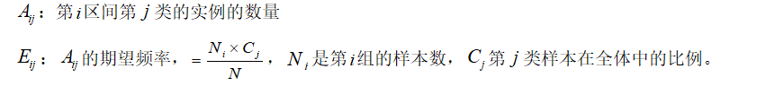

一些数据挖掘算法，特别是某些分类算法(如ID3算法、Apriori算法等)，要求数据是分类属性形式。这样，常常需要将连续属性变换成分类属性，即连续属性离散化。常用的离散化方法有等宽法、等频法、聚类法、卡方分箱法。
（1）等宽法
将属性的值域分成具有相同宽度的区间，区间的个数由数据本身的特点决定，或者由用户指定。举个例子来说：客户订阅刊物的时间是一个连续型变量,可以从几天到几年.采取等距切分可以把1年以下的客户划分成一组,1-2年的客户为一组,2-3年为一组。以此类分,组距都是一年。
（2） 等频法
将相同数量的记录放入每个区间。对于同样的例子来说：该杂志订户共有5万人，等频分段需要先把订户按订阅时间按顺序排列，排列好后可以按5000人一组，故把全部订户均匀分为十段。
（3） 聚类法
聚类分析是一种流行的数据离散化方法。将属性A的值划分簇或组。聚类考虑A分布以及数据点的邻近性，可以产生高质量的离散化结果。遵循自顶向下的划分策略或自底而上的合并策略。聚类分析的离散化方法也需要用户指定簇的个数，从而决定产生的区间数。
（4） 卡方分箱法
卡方分箱是依赖于卡方检验的分箱方法，在统计指标上选择卡方统计量进行判别。卡方分箱的基本思想是判断相邻的两个区间是否有分布差异，如果两个相邻的区间具有非常类似的分布，则这两个区间可以合并；否则，它们应当保持分开。基于卡方统计量的结果进行自下而上的合并，直到满足分箱的限制条件为止。
具体计算公式如下：
